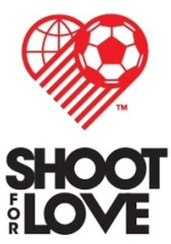

Trade Mark Journal No.2025/035 29 August 2025
WO0000001869685 (41)
Office of origin: Republic of Korea
Date of International Registration:27 June 2025
Date of designation in the UK:
27 June 2025

The mark contains the colours red and black.
The mark consists of a red heart shape with the motif of the earth and a soccer ball and the black letters "SHOOT FOR LOVE".
International priority date claimed: 26 June 2025
(Republic of Korea)
(7020250000811)
- Class 41
- Video production services; video editing; production and presentation of audio and video recordings, and still and moving images; production and distribution of sound, movie and video recordings; arranging of soccer games; organization of soccer games; arranging and conducting athletic competition; organization of marathon competitions; digital filming services; arranging of performance events for cultural or entertainment purposes; conducting of performances; conducting of performance events for cultural or entertainment purposes; production of documentaries; arranging and conducting of sporting competitions and sporting events; agencies for sports competitions; providing various facilities for an array of sporting events, sports and athletic competitions and awards programmes; organization of sporting events; game services provided on-line from a computer network for donations and charity; organising of leisure events.
Be Kind Co., Ltd.
Representative: PARK, So Hyun, Sarang IP Law Office, , #402, 67, Gangnam-gu, Seoul 06131, REPUBLIC OF KOREA